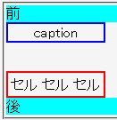
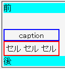

table要素の上マージンが、caption要素のボックスの上に設置される。
<div style="background:aqua;">前</div> <table style="margin-top:2em; border:2px solid red;"> <caption style="border:2px solid blue;">caption</caption> <tr><td>セル</td><td>セル</td><td>セル</td></tr> </table> <div style="background:aqua;">後</div>
| セル | セル | セル |
table要素の上マージンはtable要素のボックスの上、caption要素のボックスの下に設置されるはずです。
Netscape7.1標準モード
Opera7.50標準モード